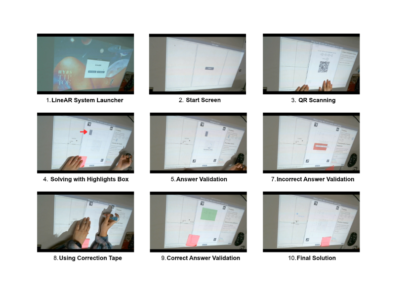
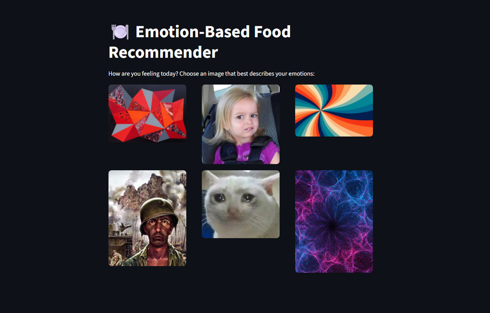
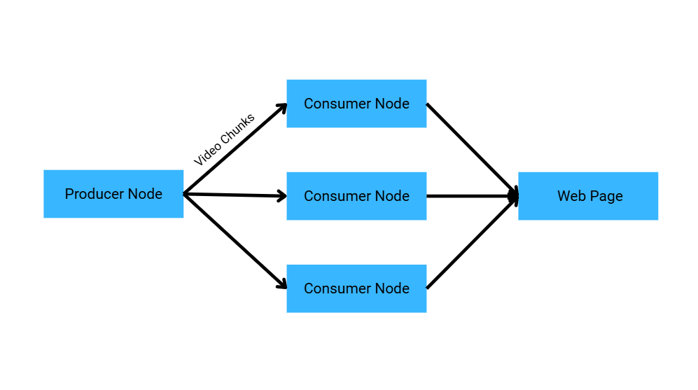
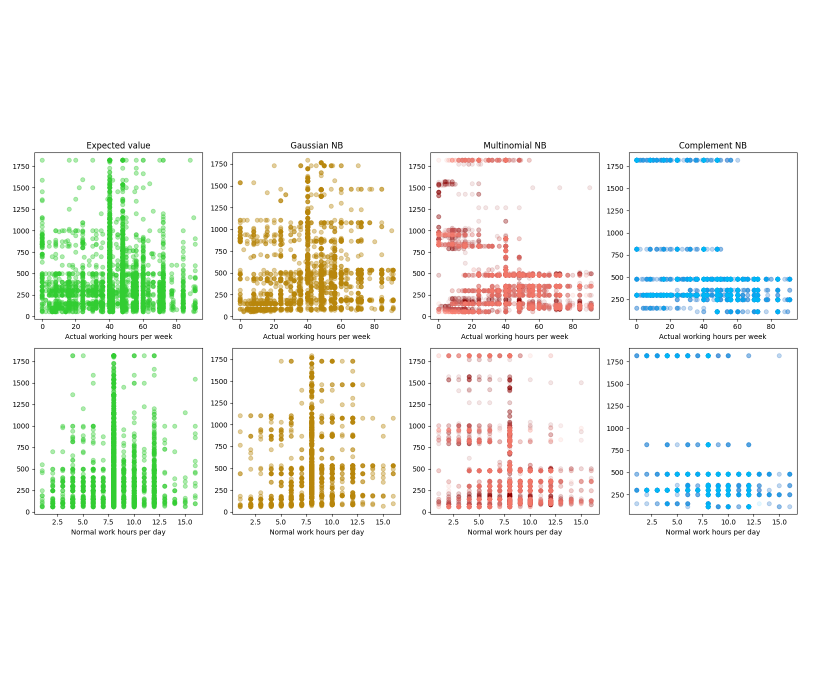
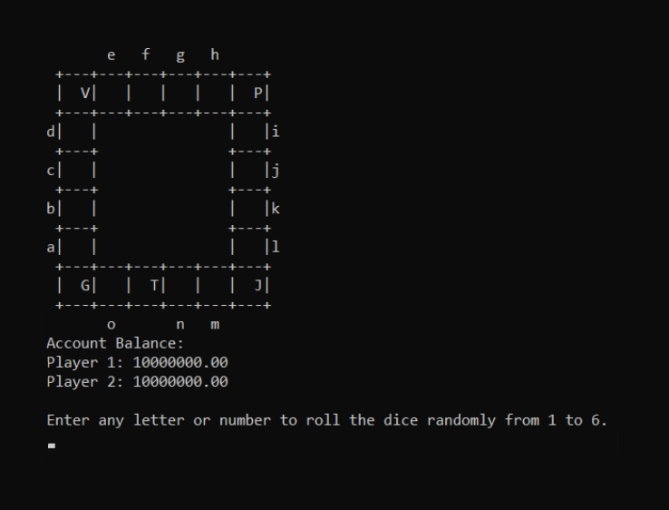
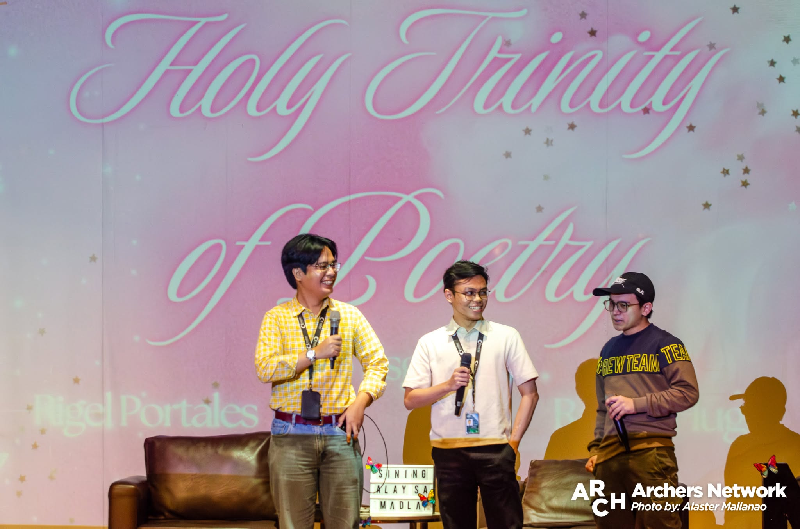

About
I am a Computer Science student at De La Salle University specializing in Human-Computer Interactions, artificial intelligence, and software engineering.
As a researcher at the Human-X Interactions Lab, I co-develop augmented reality training systems
and explore interactive interface design. I co-authored LasallEats which was presented and published at the IEEE FMLDS 2025.
In addition to software engineering, I specialize in data analysis, applied statistics, and quantitative modeling. My academic experience heavily
emphasized data preprocessing and postprocessing, statistical analysis, and data interpretation, spanning both predictive model development and
outcome-driven insights. I also conduct thematic analysis for qualitative data, usually extracting structured patterns and insights from textual sources.
Experience
Quality Assurance Intern — Dayou
Shaw Boulevard, Pasig City
Undergraduate Researcher — Human-X Interactions Lab
De La Salle University Manila
Lead Quality Assurance — Ledger.ly
De La Salle University Manila
Selected Projects

LineAR
Undergraduate ThesisDeveloped an interactive augmented reality training system for guided linear algebra learning using augmented reality. Designed projection mapping and paper tracking using OpenCV and OCR libraries under the supervision of Dr. Jordan Deja from the Human-X Interactions Lab.

LasallEats
IEEE PublicationDeveloped an empathic restaurant recommendation system for DLSU Manila students utilizing Gemini 2.5 Pro with custom prompt engineering relative to user context. Makes use of randomly chosen and set images to extract a user's emotions to cater recommendations. Published and presented at IEEE FMLDS 2025 under the guidance of Dr. Norshuhani Zamin.

Distributed Producer-Consumer Pipeline
Academic ProjectImplemented a distributed video streaming pipeline in Go using gRPC and Protocol Buffers for high-throughput inter-node communication. Designed a Producer-Consumer pattern that chunks and streams data for instant video playback during active uploads, containerized with Docker to simulate multi-server nodes.

Wage Prediction Model Analysis
Academic ProjectEvaluated supervised machine learning algorithms to predict individual wages using demographic data, educational and industry background, and work hours. Built and tuned linear models (Linear, Ridge, Lasso, SGD), Naive Bayes classifiers, and K-Nearest Neighbors using Scikit-Learn and Hyperparameter Optimization via GridSearchCV.
Cellular Automata Case Study
Academic ProjectAuthored a theoretical case study examining von Neumann's and Codd's 2-state cellular automata models. Evaluated computational universality, formal language classifications within the Chomsky Hierarchy (Type 0 unrestricted grammar), and real-world complex system simulations including Conway's Game of Life and the Nagel-Schreckenberg freeway traffic model.

Monopoly
Academic ProjectCustom implementation of the Monopoly boardgame using C99. It has pointer-driven state management for players, properties, and game flow. Made to be played by two individuals and run in the terminal.
Algorithms & Data Structures in C
Personal ProjectRecreated fundamental data structures and sorting algorithms in low-level C based on MIT coursework materials. Built custom implementations and documented each structure and algorithm with algorithmic complexity analysis and runtime benchmarks for sequential execution.
Publications & Honors
-
March 2026
Career Service Professional Examination Passer — Passed with an overall rating of 92.74%, with a 98.89% in the Numerical Ability subject area.
-
November 2025
IEEE FMLDS 2025 Paper Presenter & Author — Presented "LasallEats: A Restaurant Recommendation System Mobile App for DLSU Manila Students" at the IEEE International Conference on Future Machine Learning and Data Science.
Technical Skills
Languages
Go, Python, C/C++, Java, SQL, R, JavaScript, TypeScript, x86-64 Assembly
Data & Analytics
Pandas, NumPy, Applied Statistics, Quantitative Modeling, Data Preprocessing/Postprocessing, Thematic Analysis, Jamovi
Frameworks & Protocols
gRPC, Protocol Buffers, Express.js, Node.js, Flask
Testing & QA
Jest, Selenium, Playwright, Vitest, Appium
DevOps & Tools
Git, Docker, GitHub Actions, AWS, MySQL, SQLite, NoSQL, MongoDB, Jira, ClickUp
Events

Grand Folio Launch 2025
I, together with two former poetry editors, were called to the stage for a short and impromptu introductory segment to the poetry section. Seen in this photograph are published writers Rigel Portales and Sejo Esguerra. We three took turns in saying a word in hopes of forming a coherent sentence.
DLSU Annual Awards for Literature and Visual Arts (LITAW-VISAW 2025)
As the poetry editor, I held an introductory monologue prior to the presentation of winners for the Poetry and Tula categories. Here, I had written a short rhetoric on the weight of interpretation and reading comprehension on poetry.